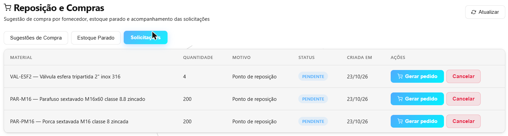
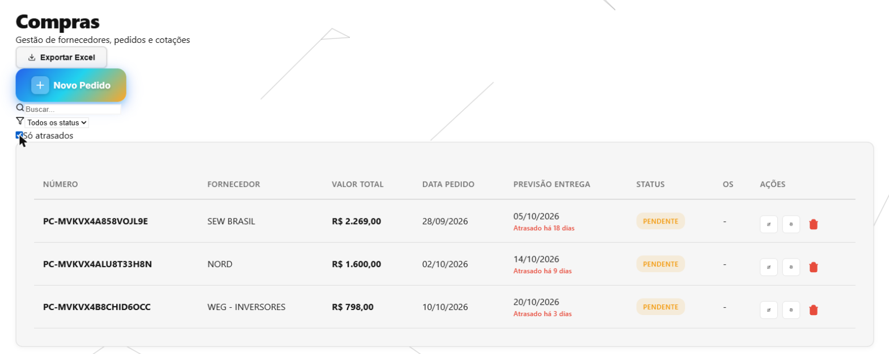
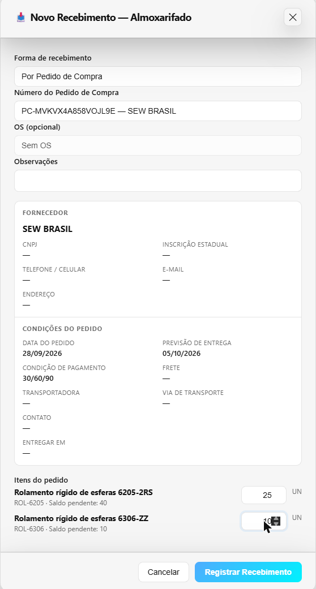
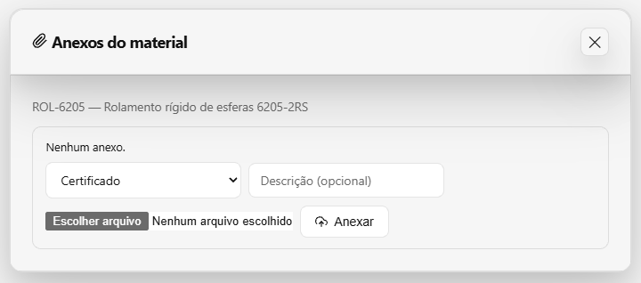
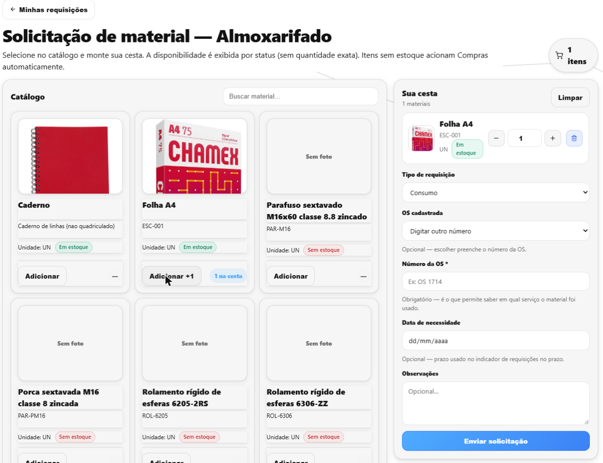
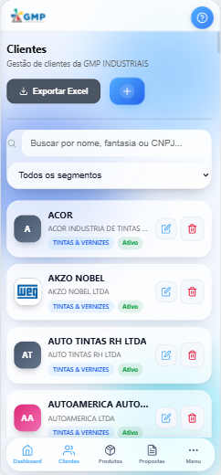

O que fizemos no sistema esta semana
Domingo 13/09 a sábado 19/09/2026 · CRM GMP Industriais
O pedido de compra passou a ser feito, acompanhado e cobrado dentro do sistema, o recebimento ganhou a conferência física e o sistema ficou usável no celular, como aplicativo. Por baixo, fechamos as portas que deixavam a mesma nota fiscal entrar duas vezes e uma tela dizer "não tem nada" quando, na verdade, a internet tinha caído. Na semana seguinte, o celular chega às telas de Propostas e Produtos, e Fornecedores e Cotações ganham telas próprias.
O que você já pode ver na tela
Pedido de compra feito dentro do sistema, mais rápido de lançar
Onde: Compras → Pedidos de Compra → Novo Pedido. E também em Almoxarifado → Reposição → Solicitações, no botão “Gerar pedido”.
Antes: o botão “Novo Pedido” não abria nada. O pedido era feito fora do sistema, e a solicitação de reposição do almoxarifado ficava parada como “pendente” para sempre, porque não havia como transformá-la em pedido.
Agora: o pedido é montado na tela, quase todo por botões: condição de pagamento (com PIX, cartão, boleto e 30/60/90/120), frete, unidade, IPI e datas. O que não está na lista entra pelo botão “Outro…” e passa a aparecer como botão no próximo pedido. As unidades dizem o nome por extenso (G de grama, M de metro, L de litro). Pedido com muitos itens se lança em lote, pela tecla F2. O número do pedido é gerado sozinho. A solicitação de reposição vira pedido com um clique, já preenchida. E os pedidos que já existiam em planilha podem ser importados de uma vez.


Pedido atrasado aparece em vermelho e avisa
Onde: Compras → Pedidos de Compra (coluna Previsão Entrega) e Almoxarifado → Alertas.
Antes: um pedido vencido havia 40 dias era igual, na lista, a um pedido no prazo. Ninguém era avisado, e o pedido esquecido ficava esquecido.
Agora: ao lado da data aparece o selo “Atrasado há 12 dias”. A caixa “Só atrasados” deixa na lista só os que passaram do prazo, e o Excel exportado traz as colunas “Atrasado” e “Dias de atraso”. Todo dia o sistema manda um e-mail para Compras por pedido atrasado, e a tela de Alertas ganhou o cartão “Pedido de compra atrasado”.

Recebimento: conferir o que chegou de verdade, e receber em partes
Onde: Almoxarifado → Recebimentos.
Antes: o recebimento mostrava uma quantidade só e não tinha onde anotar a contagem física. No recebimento pelo pedido, não dava para dizer “chegaram 6 dos 10”: o sistema dava o pedido inteiro como recebido.
Agora: cada item mostra quanto era esperado e tem o campo “Qtd. conferida”. Se a contagem não bate, a tela avisa na hora: “Divergência: 13 a menos que o esperado”. No recebimento pelo pedido, cada linha mostra o “Saldo pendente”: digite 6 numa linha de 10 e o pedido continua aberto esperando os 4 que faltam. Pedido totalmente recebido sai da lista.


Documentos presos ao registro certo: o clipe em cinco telas novas
Onde: Almoxarifado → Materiais, Requisições, Recebimentos, Devoluções e Remessas a Terceiros.
Antes: a ficha técnica ficava numa pasta da rede, a nota escaneada no e-mail de quem recebeu, o comprovante da devolução numa gaveta, e o certificado de galvanização sumia no dia seguinte à volta do material.
Agora: cada um desses registros tem um clipe (ou um bloco “Anexos”) para guardar o PDF ou a foto junto dele. Na remessa a terceiros, o clipe fica em cada item, para o certificado ir para a peça certa. Quem acaba de registrar um recebimento já cai na tela onde anexa a nota, com ela ainda na mão.

Requisição de material exige o número da OS
Onde: Almoxarifado → Requisições → Nova requisição.
Antes: o número da OS era opcional, e depois não dava para saber em qual serviço cada material tinha sido usado.
Agora: a requisição só é enviada com o número da OS preenchido — pedido da gerência de Compras. É a primeira coisa que o sistema cobra, antes de qualquer outra conferência, para quem esqueceu não ir mexer no lugar errado.

O sistema no celular, como aplicativo
Onde: em qualquer tela, aberta pelo navegador do celular. O botão “Instalar aplicativo” fica no rodapé do menu.
Antes: no computador estava bom, mas no celular era confuso: menu que não cabia, textos espremidos e tabelas que precisavam ser roladas de lado, perdendo de vista o nome de cada coluna.
Agora: o sistema se instala no celular com o ícone da empresa, como um aplicativo. A navegação foi para uma barra embaixo, ao alcance do polegar, com o logo da GMP no topo. Toda tabela vira uma lista de cartões, com o nome da coluna ao lado de cada valor. A lista de Clientes foi a primeira redesenhada como aplicativo de verdade: iniciais coloridas, nome em destaque e os botões à mão. No computador, nada mudou.

O que fizemos por baixo — e por que importa
Parte do trabalho não muda a aparência das telas: é o “motor” que faz as contas e guarda as informações. Quando ele erra, o erro aparece depois, em forma de estoque que não bate ou de material que some. Esta semana, no motor:
A mesma nota fiscal não entra duas vezes
O problema: a mesma nota do mesmo fornecedor podia ser lançada duas vezes. Resultado: estoque em dobro e duas contas a pagar. Também era possível receber 999 peças de um pedido de 10, ou lançar quantidade zero ou negativa, sem ninguém autorizar nada.
O que fizemos: a nota repetida é recusada, e a mensagem diz em qual recebimento ela já está. Quantidade tem de ser maior que zero. Receber mais do que o pedido só com a autorização de Compras ou do Administrador — e essa autorização fica registrada com o nome de quem deu.
O que isso evita: estoque inflado no papel, pagamento em dobro e material “a mais” que ninguém sabe de onde veio.
A tela não diz “não tem nada” quando a internet caiu
O problema: se a conexão caía, a tela de Recebimentos dizia “Nenhum recebimento registrado”. Quem olhava achava que a nota não tinha sido lançada e lançava de novo. Ao trocar de um recebimento para outro, o painel mostrava por um instante os dados do anterior com o número do novo no alto. E, em algumas telas, a coluna de botões era cortada pela borda, sem barra para rolar: o botão simplesmente não aparecia.
O que fizemos: a tela agora diz “Não foi possível carregar”, com o botão “Tentar de novo”. O painel se esvazia na hora da troca, e a coluna de botões voltou a aparecer inteira.
O que isso evita: recebimento lançado em duplicidade e decisão tomada olhando o registro errado.
As datas dos pedidos param de voltar um dia
O problema: um pedido de 16/09 aparecia como 15/09. A cada vez que o Excel era exportado e importado de novo, as datas andavam mais um dia para trás. E, das 21h à meia-noite, o pedido novo nascia com a data de amanhã.
O que fizemos: a data mostrada é a que está no pedido, em qualquer horário, e o vaivém pelo Excel devolve a mesma data.
O que isso evita: cobrança de fornecedor no dia errado e atraso contado a mais ou a menos.
Apagar um pedido não deixa pedaços soltos
O problema: excluir um pedido apagava o cabeçalho e deixava os itens perdidos onde o sistema guarda as informações — ou dava um erro genérico, sem dizer o motivo.
O que fizemos: o pedido sai inteiro, com os itens, e a solicitação de reposição que tinha virado aquele pedido volta para a fila, pronta para virar outro. Pedido que já teve recebimento não pode ser apagado, e a tela diz por quê.
O que isso evita: material que some da fila de compra sem ter sido comprado.
Para onde foi o tempo
Cerca de 25 horas de desenvolvimento nesta semana.
Foi uma semana de tela: mais de um terço do tempo foi nas telas que você usa, a maior parte no celular, de quinta a sábado. O outro terço foi nas conferências automáticas: são robôs que repetem centenas de situações a cada mudança — a nota repetida, a internet que cai, o pedido recebido em três partes — para que o que já funciona não quebre escondido. Foi assim que pegamos, ainda na mesma semana, um recebimento pelo pedido que entrava com preço zero e bagunçaria o custo médio do material. O resto foi planejar cada mudança e atualizar os manuais.
As horas são estimadas pelo registro do trabalho salvo ao longo do dia. Pesquisa, conversas e testes feitos à mão não entram — o número real é maior.
O que vem na próxima semana
- Propostas, Produtos e o painel inicial redesenhados para o celular, no mesmo padrão da lista de Clientes.
- Fornecedores e Cotações ganham telas próprias para cadastrar e editar.
- A cotação aprovada vira pedido de compra com um clique, com os itens já preenchidos.
Quer conferir?
- Abra Compras → Pedidos de Compra → Novo Pedido, escolha o fornecedor e lance dois itens pelos botões. Salve e veja o número gerado.
- Na mesma lista, marque “Só atrasados” e veja o selo vermelho na coluna Previsão Entrega.
- Abra Almoxarifado → Recebimentos → Novo recebimento → Por Pedido de Compra, escolha o pedido e digite menos do que o “Saldo pendente” numa linha. Salve: o pedido continua na lista com o que falta.
- Abra um recebimento já registrado, preencha a “Qtd. conferida” com um número diferente do esperado e veja o aviso de divergência.
- Abra Almoxarifado → Materiais e clique no clipe de um material para anexar a ficha técnica.
- No celular, abra o sistema no navegador, toque em “Instalar aplicativo” no menu e abra Clientes pelo ícone na tela inicial.